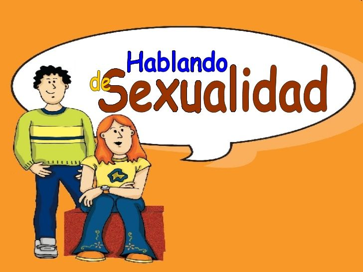
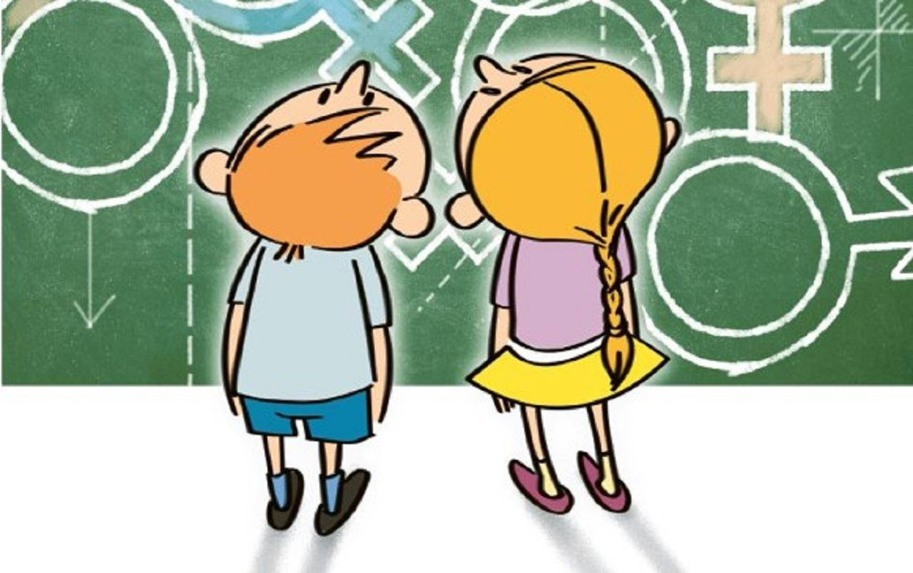
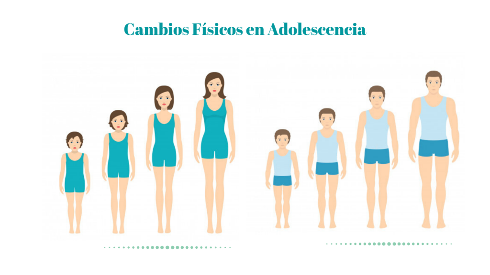
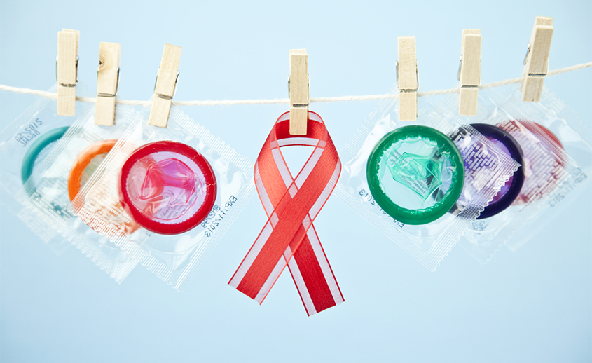
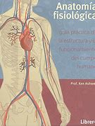

¿Qué es la educación sexual educativa?
La educación sexual educativa es el conjunto de conocimientos, habilidades y valores que se transmiten a través de la enseñanza formal e informal para promover el desarrollo saludable y responsable de la sexualidad humana. La educación sexual educativa busca brindar información precisa y adecuada para que las personas tomen decisiones informadas sobre su cuerpo, relaciones y salud sexual.
Importancia de la educación sexual educativa
La educación sexual educativa es importante porque permite a las personas comprender su sexualidad de manera más completa y saludable. Proporciona información precisa y adecuada sobre el cuerpo humano, las relaciones sexuales, la prevención de enfermedades de transmisión sexual y el embarazo no deseado. Además, fomenta valores como la responsabilidad, el respeto y la tolerancia hacia la diversidad sexual.
Temas de la educación sexual educativa
- La anatomía y fisiología del cuerpo humano
- La pubertad y los cambios corporales 
- La prevención de enfermedades de transmisión sexual 
- El uso de métodos anticonceptivos
La anatomía del cuerpo humano es un tema importante en la educación sexual porque permite a las personas entender cómo funciona su cuerpo, cómo se desarrollan y cómo pueden cuidarlo. En particular, en el contexto de la educación sexual, conocer la anatomía de los órganos sexuales masculinos y femeninos es fundamental para comprender la función sexual y reproductiva, así como para poder identificar cualquier problema de salud que pueda surgir. Además, el conocimiento de la anatomía ayuda a reducir la vergüenza o el miedo alrededor de la sexualidad, ya que permite entender que el cuerpo humano tiene formas y funciones variadas y normales.
